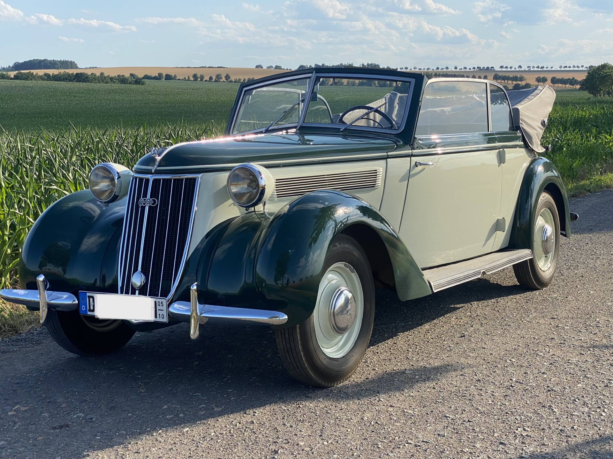
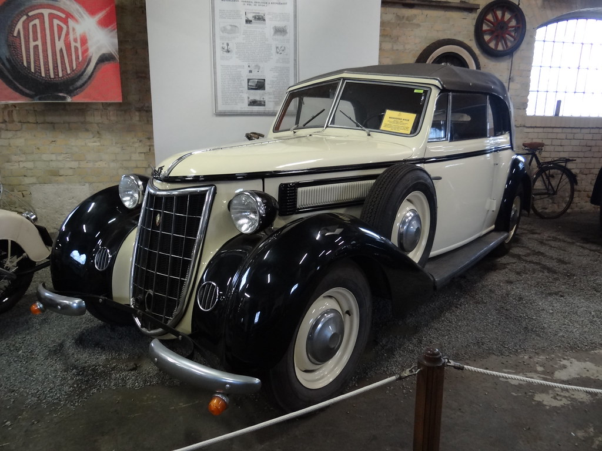
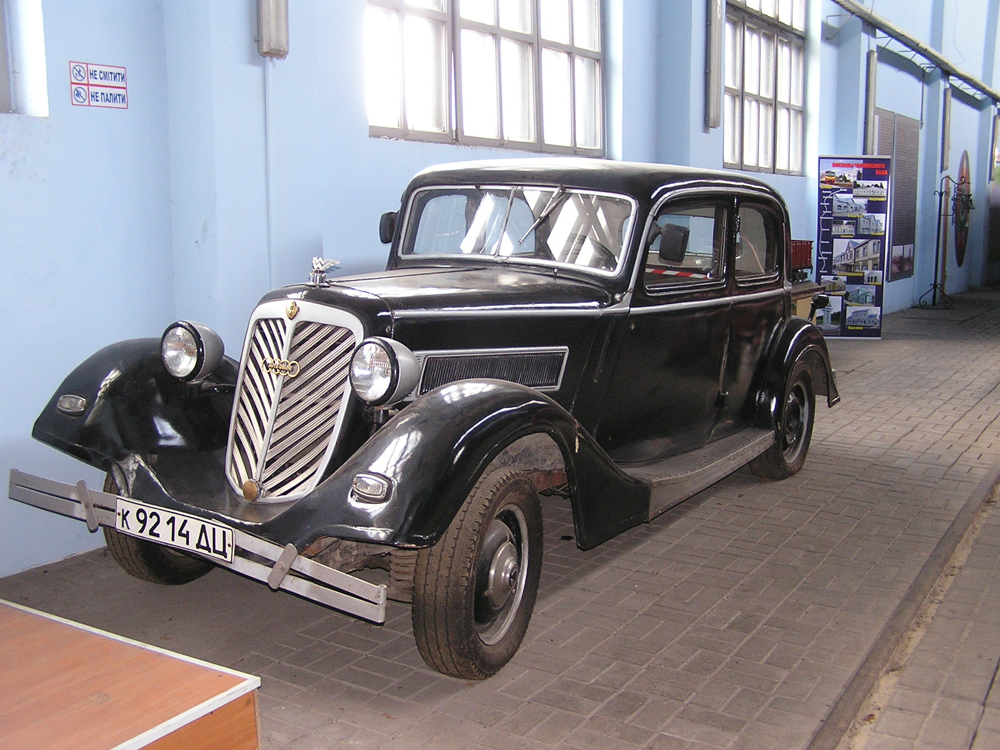
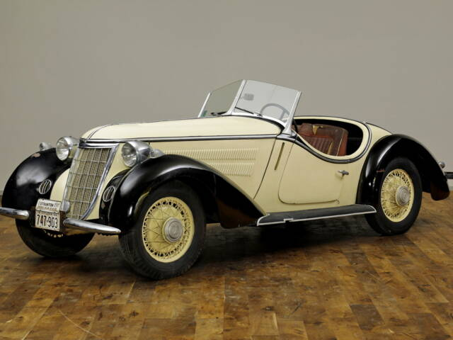
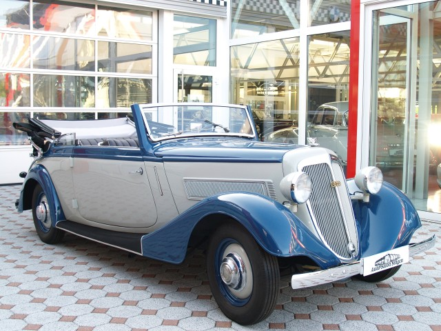

Modell: Wanderer W23
Baujahr: 1936-1938
Produktionsstückzahl: 2.100
Motor: 6-Zylinder, 3.5L
Leistung: 85 PS
Höchstgeschwindigkeit: 130 km/h

Modell: Wanderer W51
Baujahr: 1939-1941
Produktionsstückzahl: 1.250
Motor: 6-Zylinder, 4.0L
Leistung: 100 PS
Höchstgeschwindigkeit: 140 km/h

Modell: Wanderer W240
Baujahr: 1941-1945
Produktionsstückzahl: 500
Motor: 6-Zylinder, 4.5L
Leistung: 110 PS
Höchstgeschwindigkeit: 145 km/h

Modell: Wanderer W350
Baujahr: 1938-1941
Produktionsstückzahl: 800
Motor: 8-Zylinder, 5.0L
Leistung: 120 PS
Höchstgeschwindigkeit: 150 km/h

Modell: Wanderer W55
Baujahr: 1935-1939
Produktionsstückzahl: 1.800
Motor: 4-Zylinder, 2.6L
Leistung: 70 PS
Höchstgeschwindigkeit: 115 km/h